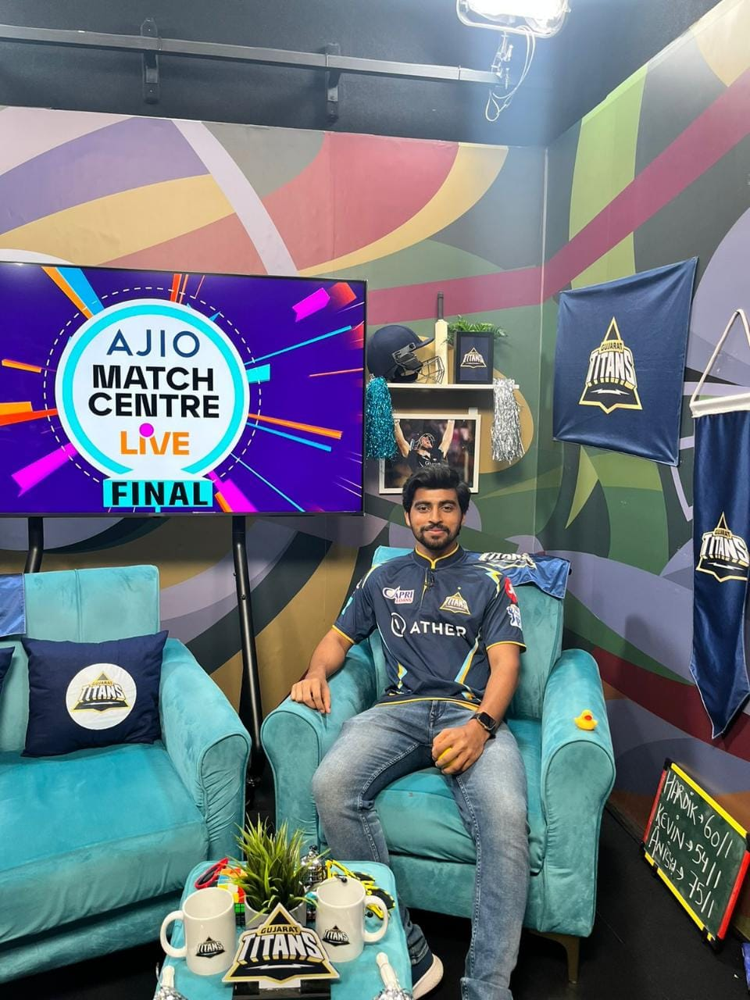

IPL Commentary

I had the incredible opportunity to serve as a cricket commentator for the Indian Premier League (IPL) in 2023 for JioCinema. As a lifelong fan of the sport, this experience was both professionally enriching and personally rewarding. I was part of pre, post and mid match shows which were streamed live throughout the country. I collaborated with other commentators to deliver engaging match analysis and real-time commentary.
Check out more here